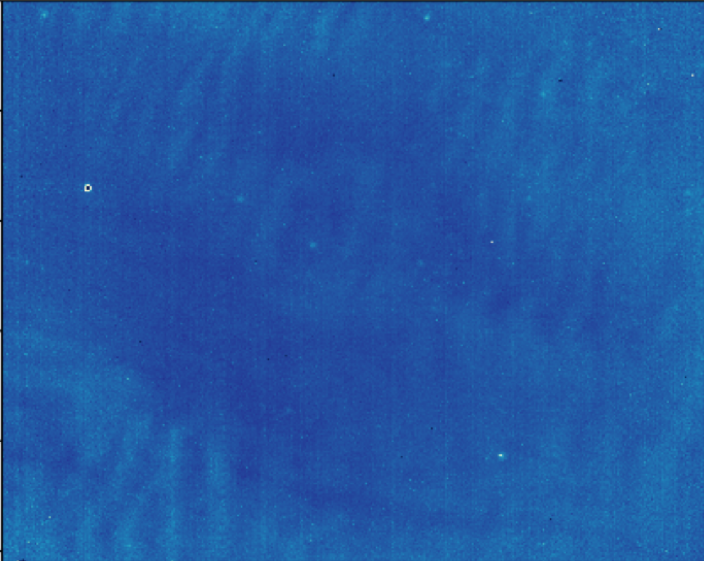
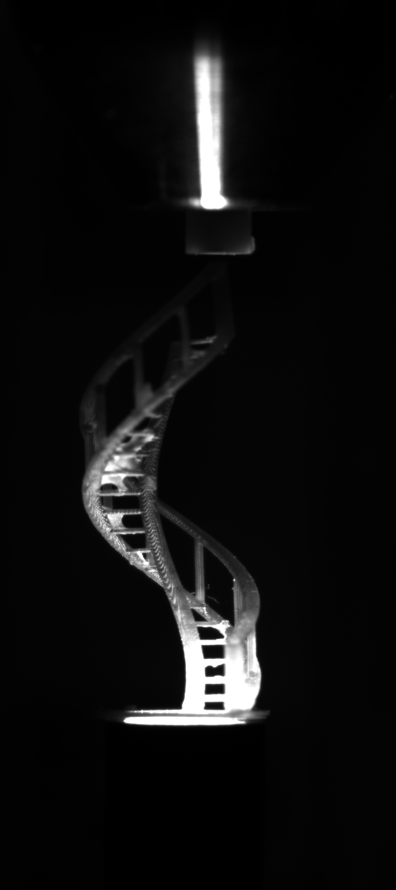
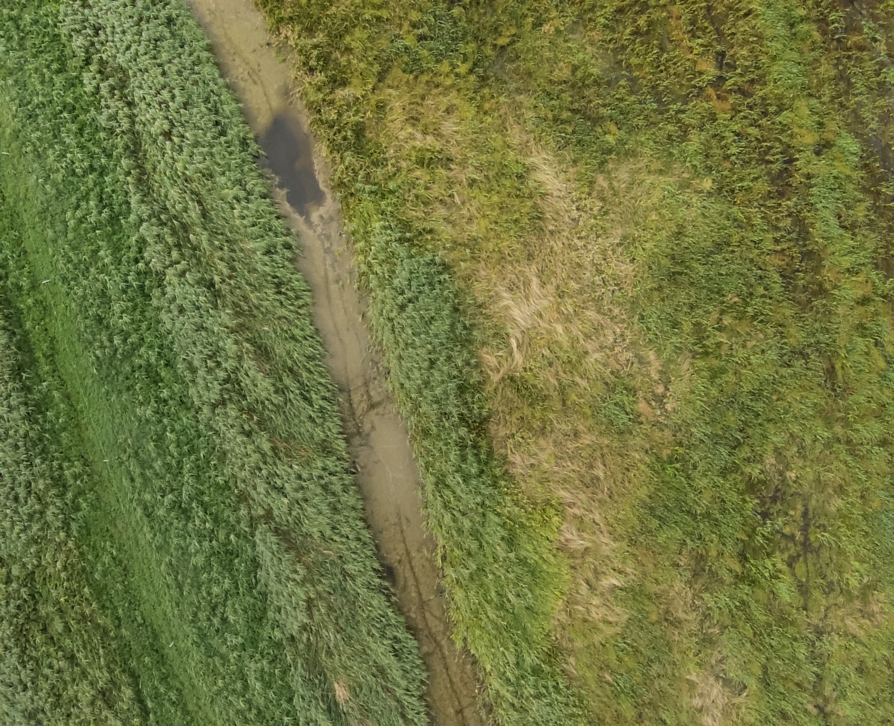
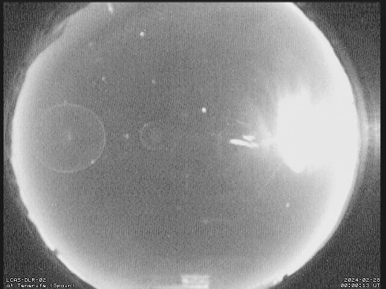
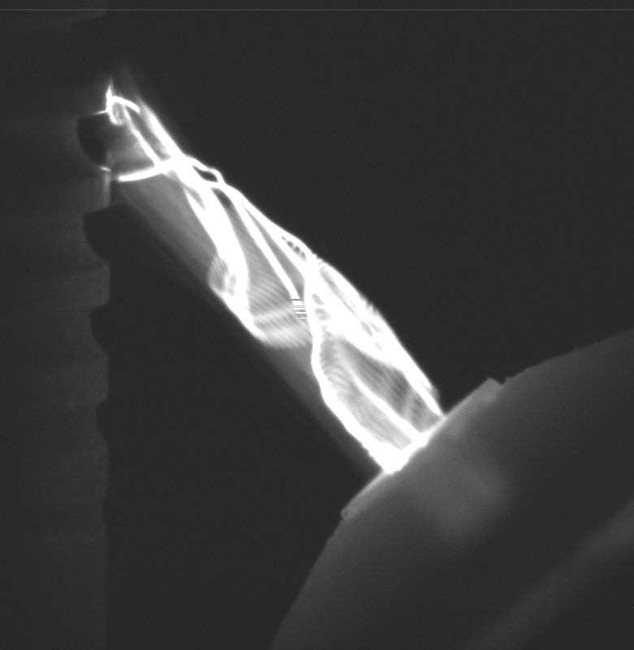
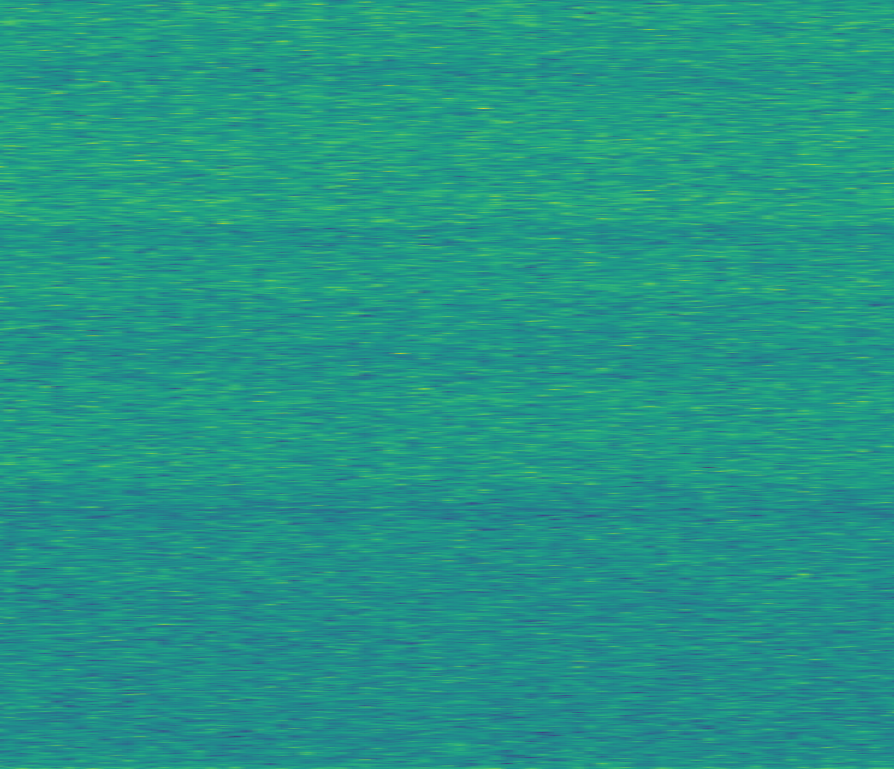
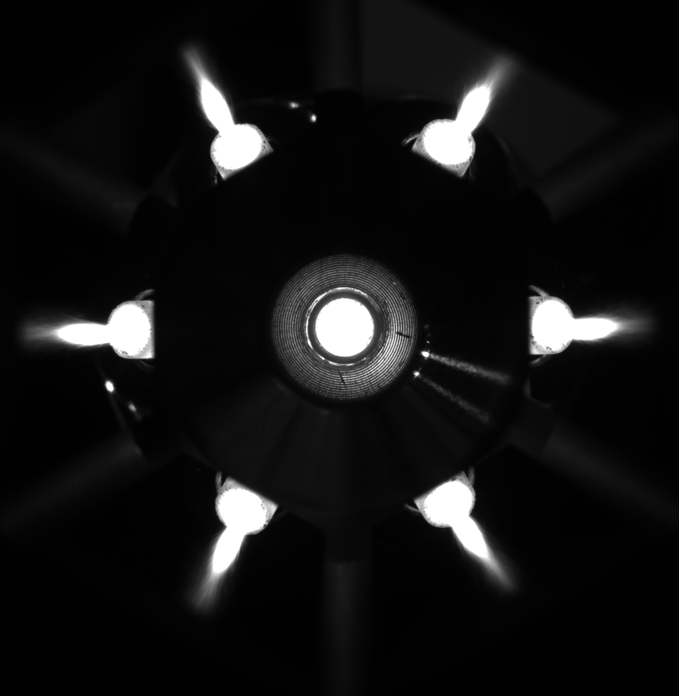

WETTER
The data can go straight in — or take the route it needs.






Raw Data Ocean
Scientific images & camera techniques — plus JPEG/TIFF, NumPy, MATLAB, ASCII, and more
Curated route
Build a browsable SQL image database, then filter into the viewers

DONNER
Explore 3D / XR
Immersive exploration of N-dimensional volumes, events, and XR views — also straight from raw data.
BLITZ
Analyze 2D / stats
High-performance 2D inspection, measurement, and stats — drag-and-drop raw files and folders.
Sidecars
Converters & adapters
Event
Camera raw → viewer
Import
Ingest adapters
Adapter
Format converters
Modular data ecosystem: two strong viewers, optional curated WOLKE route, and sidecars when the data needs them.
Scientific Imaging
Dataset Exploration
Knowledge Extraction
Image Analysis
Open Source